登頂人：魏誌廷（William_Wei）
登頂日期：2025年10月3日
登頂高度：3,952公尺
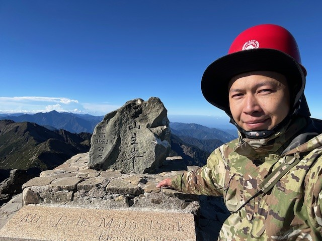 |
備戰—不僅是體力考驗，更是場意志的磨練
「成功，是留給準備好的人」為了這趟挑戰，我的自主訓練從未間斷。從下班後的慢跑、參與大型馬拉松，到不定期的大小山徑健行與高山縱走，目的就是讓肌肉保有「痠痛記憶感」。出發前夕，我更嚴格執行清淡飲食，只為讓身體維持在最穩定的狀態。
眾所皆知，兩天一夜的排雲山莊行程是夢幻首選，但在「抽籤靠運氣」的現實下，我選擇了更具挑戰性的計畫，一日單攻。帶著隨遇而安的心情，一個人也能在山徑上結識志同道合的新朋友
深夜起登—黑夜裡的孤獨與警覺
為了避開車潮並提早適應高度，我提前請了特休上山。前一晚在車上簡單用過泡麵晚餐、泡杯茶後，便在東埔停車場小睡休息，深夜的氣溫冷冽，車外熱血山友們往來的聲響讓熱血沸騰的我難以入眠，索性整裝提前出發，時間大約是午夜十二點。
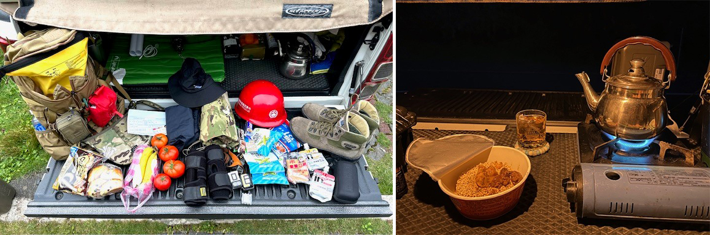 |
凌晨時段沒有接駁交通車，我獨自走過五十分鐘的上坡柏油路，在塔塔加警察小隊投遞入山證和排雲服務中心刷身分證，辦妥自主入園手續後，正式踏入漆黑山徑感受四周的寂靜無聲，唯有頭燈的光束指引前方，我屏息凝神、耳聽八方，在寧靜的夜裡中保持最高度的警覺。
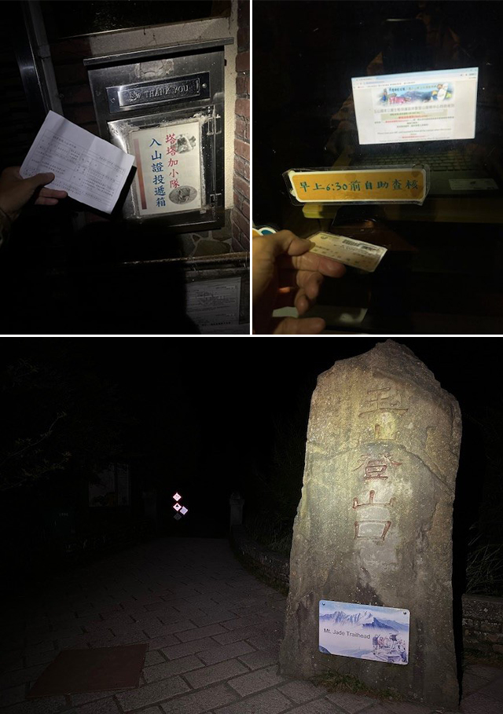 |
轉折—黑暗中的互助溫情
接近排雲山莊最後一公里處，寂靜被跌落聲響與大喊聲打破，我快速上前察看，發現兩名山友大哥正陷入困境，其中一位大哥精神體力不濟，不慎跌落箭竹林中，拉起後所幸無大礙，經過談話後了解他們因從高雄連夜開車趕路，所以整夜沒睡，我主動提議三人組隊前行，由我擔任壓後支援，在寒夜中可相互照應。
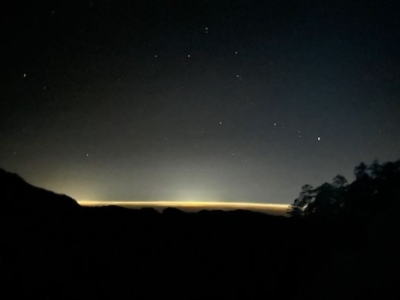 |
當我們抵達排雲山莊時，緩緩升起的曙光正好劃破天際，看著金黃色的光芒探出頭來，心中那種「從黑夜走到白天」的震撼與感動，讓我的眼眶禁不住泛出淚水，這不只是體能的跨越，更是一種心靈的成長。
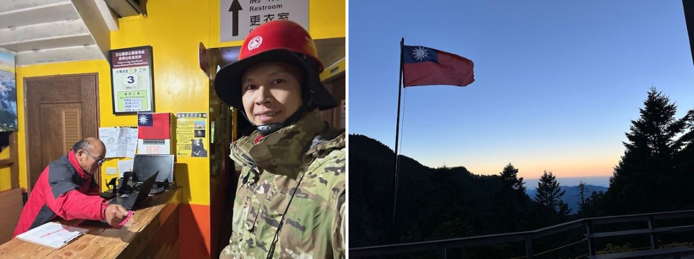 |
登頂主峯—3,952公尺的深情擁吻
在排雲山莊短暫休憩、為受傷的大哥包紮後，我們迎接最後兩公里的考驗，經典碎石坡、鐵籠路段與拉鐵鍊攀爬，我一邊感受約 7°C 的寒意，一邊透過智慧手錶監測心律，控制呼吸節奏。
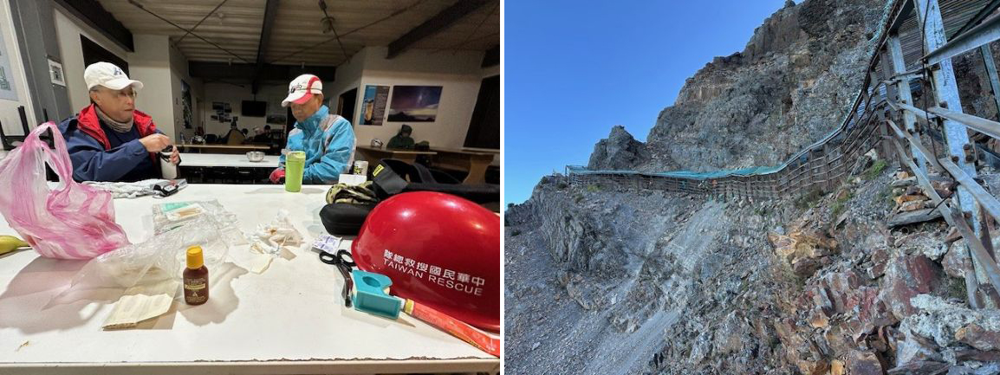 |
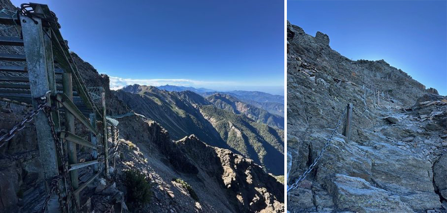 |
每跨出一步，都是與大山的對話，當我拉著最後一條鐵鍊、跨上石階的那一刻，我選擇直接擁抱基石，給予台灣之母玉山基石一個熱情的親吻。
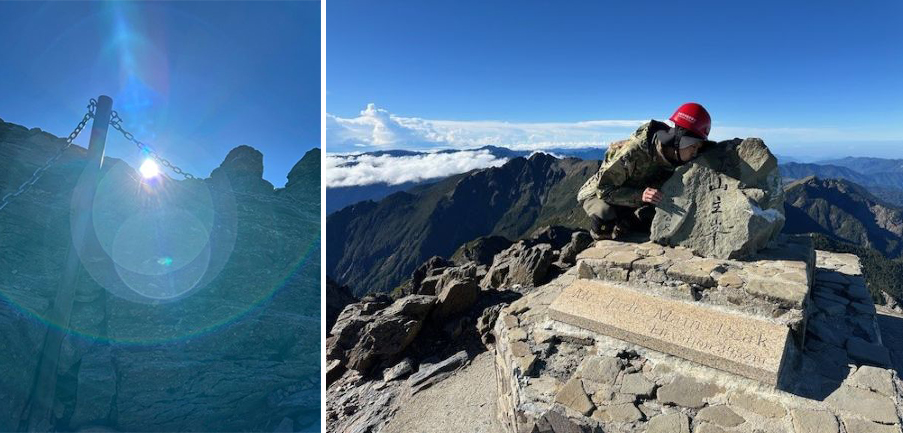 |
下山—完美的句點
回程路上陽光普照，一路上可好好拍照，補齊了深夜登山遺漏的風景，壯闊的地殼隆起遺址、蒼勁的珍奇老樹，以及著名的孟祿亭。
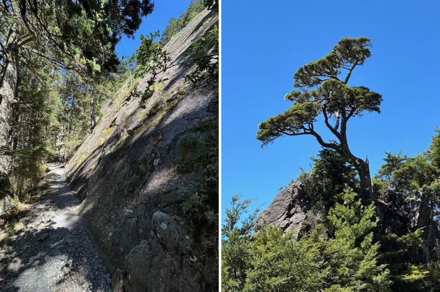 |
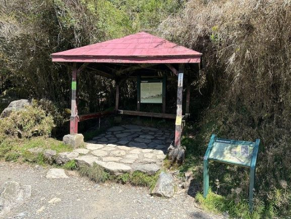 |
最幸運的是，在距離登山口僅剩兩公里處，巧遇美麗的國寶「台灣帝雉」現身相迎，為這趟旅程畫下了最完美的句點。
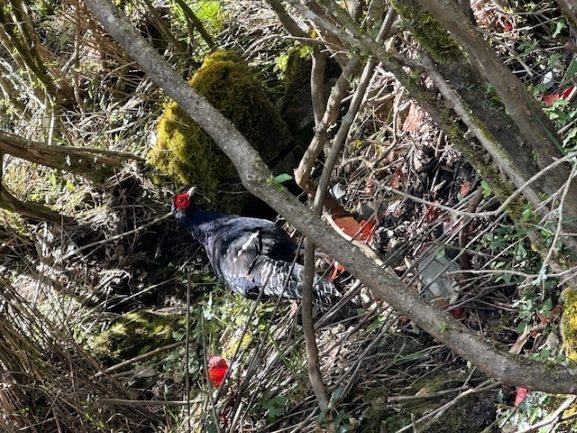 |
感謝山神保佑，感謝這片美麗的福爾摩沙，讓我們平安歸來。
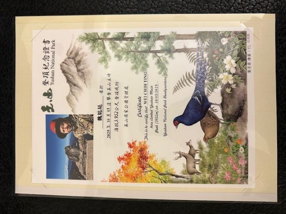 |